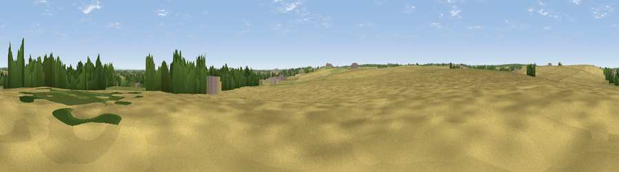

Windmill Hill
#41798 in England · top 83% of its area beats it · near Barkston AshWhere it is
The exact computed spot (SE 48628 36630). Click the marker for map links.
The view, rendered

A 360° render of this exact spot computed from the terrain model, tree cover and land cover — summer colours, afternoon light, calibrated against photographs of famous viewpoints. Real trees, hedges and buildings will differ in detail.
The panorama
Grey silhouette: terrain skyline in each direction (720 bearings, Earth curvature and refraction included). Dashed green: skyline with trees (+15 m) and buildings (+8 m) as obstacles. Blue strip: how far the ground is visible on each bearing.
Where the view opens
Wedge length = distance to the farthest visible ground on that bearing (vegetation-aware). Rings at 10, 25 and 50 km.
What fills the view
73% cropland · 16% grassland · 10% woodland · 2% built-up
Angular shares of the visible panorama (visual magnitude), not map area. Landscape diversity 0.36 (0–1 Shannon).
Key numbers
More beautiful places nearby
The staircase of upgrades: each row has a higher view potential than everything closer. Driving times are estimates from straight-line distance, calibrated against real road routing — check an actual route before setting out.
| Place | Direction | Drive | Score |
|---|---|---|---|
| Viewpoint near Barkston Ash | SSW · 2 km | ~4 min | 49.6 |
| Viewpoint near Towton | NNW · 5 km | ~10 min | 50.3 |
| Viewpoint near Hambleton | SE · 6 km | ~14 min | 57.7 |
| Viewpoint near Micklefield | SW · 6 km | ~14 min | 65.7 |
| Viewpoint near North Rigton | WNW · 25 km | ~41 min | 66.6 |
| Rawdon Trig point | W · 27 km | ~43 min | 69.6 |
| Rawdon Billing | W · 27 km | ~43 min | 73.0 |
| Viewpoint near Otley | WNW · 29 km | ~46 min | 77.5 |
53.82367, -1.26276 · source: osm peak · position refined by local search. Computed location — check access rights before visiting.